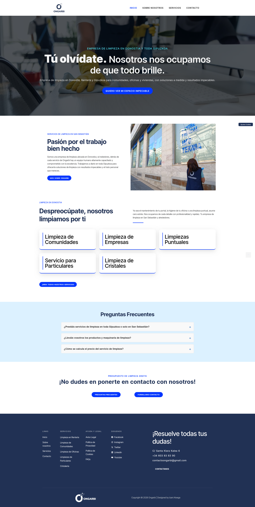

ONGARBI
Web corporativa para una empresa de limpieza. Una solución sencilla y funcional para reforzar su presencia digital.
HTMLIONOS
open_project() ↗
Desarrollador web junior. Me gusta convertir ideas en interfaces que funcionan, se sienten rápidas y tienen alguna sorpresa escondida.

Web corporativa para una empresa de limpieza. Una solución sencilla y funcional para reforzar su presencia digital.
Aplicación web para la gestión de un concesionario. Un proyecto más ambicioso con frontend moderno y backend preparado para crecer.
$ whoami
izani_achega
$ cat interests.txt
web_development
ui_experiments
problem_solving
learning_new_things
$ ./coffee --amount=∞
☕ compiling...
Soy Izani Achega, desarrollador web junior con experiencia en desarrollo, WordPress, SEO técnico, analítica y soporte informático.
Me interesa especialmente el frontend y todo lo que ocurre entre una idea y una web que realmente puedes usar.
Borja Barrado Diseño Web y SEO · Donostia
WordPress · SEO técnico · Google AnalyticsInkode
TPVs · mantenimiento · soporte técnico · atención al clienteDisconsu
Impresoras · dispositivos electrónicos · mantenimiento · soporteSi tienes una idea, una web que mejorar o simplemente quieres saludar:
iachega06@gmail.com ↗Welcome to izani.exe
Type help to see available commands.